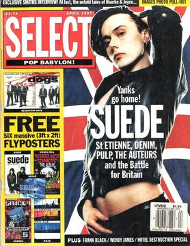
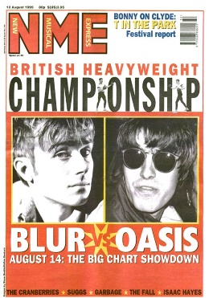
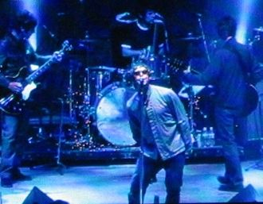

.jpg)
History Of Britpop
Origins and first years

John Harris has suggested that Britpop began when Blur's fourth single "Popscene" and Suede's "The Drowners" were released around the same time in the spring of 1992. He stated, If Britpop started anywhere, it was the deluge of acclaim that greeted Suede's first records: all of them audacious, successful and very, very British. Suede were the first of the new crop of guitar-orientated bands to be embraced by the UK music media as Britain's answer to Seattle's grunge sound. Their debut album Suede became the fastest-selling debut album in the history of the UK. In April 1993, Select magazine featured Suede's lead singer Brett Anderson on the cover with a Union Flag in the background and the headline "Yanks go home!" The issue included features on Suede, the Auteurs, Denim, Saint Etienne and Pulp and helped start the idea of an emerging movement.
Blur were involved in a vibrant social scene in London (dubbed "The Scene That Celebrates Itself" by Melody Maker) that focused on a weekly club called Syndrome in Oxford Street; the bands that met up were a mix of music styles, some would be labelled shoegazing, while others would go on to be part of Britpop. The dominant musical force of the period was the grunge invasion from the United States, which filled the void left in the indie scene by the Stone Roses' inactivity. Blur, however, took on an Anglocentric aesthetic with their second album Modern Life Is Rubbish (1993).
Blur's new approach was inspired by a tour of the United States in the spring of 1992. During the tour, frontman Damon Albarn began to resent American culture and found the need to comment on that culture's influence seeping into Britain. Justine Frischmann, formerly of Suede and leader of Elastica (and at the time in a relationship with Albarn) explained, "Damon and I felt like we were in the thick of it at that point ... it occurred to us that Nirvana were out there, and people were very interested in American music, and there should be some sort of manifesto for the return of Britishness. John Harris wrote in an NME article just before the release of Modern Life is Rubbish: "[Blur's] timing has been fortuitously perfect. Why? Because, as with baggies and shoegazers, loud, long-haired Americans have just found themselves condemned to the ignominious corner labelled 'yesterday's thing'. The music press also fixated on what the NME had dubbed the New Wave of New Wave, a term applied to the more punk-derivative acts such as Elastica, S*M*A*S*H and These Animal Men.
While Modern Life Is Rubbish was a moderate success, Blur's third album, Parklife, made them arguably the most popular band in the UK in 1994. Parklife continued the fiercely British nature of its predecessor, and coupled with the death of Nirvana's Kurt Cobain in April of that year British alternative rock became the dominant rock genre in the country. That same year Oasis released their debut album Definitely Maybe, which broke Suede's record for fastest-selling debut album; it went on to be certified 7× Platinum (2.1 million sales) by the BPI. Blur won four awards at the 1995 Brit Awards, including Best British Album for Parklife (ahead of Definitely Maybe). In 1995, Pulp released the album Different Class which reached number one, and included the single "Common People". The album sold over 1.3 million copies in the UK.
The term "Britpop" arose when the media were drawing on the success of British designers and films, the Young British Artists (sometimes termed "Britart") such as Damien Hirst, and on the mood of optimism with the decline of John Major's government, and the rise of the youthful Tony Blair as leader of the Labour Party. After terms such as "the New Mod" and "Lion Pop" were used in the press around 1992, journalist (and now BBC Radio 6 Music DJ) Stuart Maconie used the term Britpop in 1993 (though recounting the event in a BBC Radio 2 programme from 2020, he believed it may have been used in the 1960s, around the time of the British Invasion). However, journalist and musician John Robb states he had used the term in the late 1980s in Sounds magazine to refer to bands such as the La's, the Stone Roses and Inspiral Carpets, though many of these acts would be grouped under the Baggy, Madchester and indie-dance genres at the time.
It was not until 1994 that Britpop started to be used by the UK media in relation to contemporary music and events. Bands emerged aligned with the new movement. At the start of 1995, bands including Sleeper, Supergrass and Menswear scored pop hits. Elastica released their debut album Elastica that March; its first week sales surpassed the record set by Definitely Maybe the previous year. The music press viewed the scene around Camden Town as a musical centre; frequented by groups like Blur, Elastica, and Menswear; Melody Maker declared "Camden is to 1995 what Seattle was to 1992, what Manchester was to 1989, and what Mr Blobby was to 1993.
"The Battle of Britpop"

A chart battle between Blur and Oasis, dubbed "The Battle of Britpop", brought Britpop to the forefront of the British press in 1995. The bands had initially praised each other but over the course of the year antagonisms between the two increased. Spurred on by the media, they became engaged in what the NME dubbed on the cover of its 12 August issue the "British Heavyweight Championship" with the pending release of Blur's single "Country House" and Oasis' "Roll with It" on the same day. The battle pitted the two bands against each other, with the conflict as much about British class and regional divisions as it was about music. Oasis were taken as representing the North of England, while Blur represented the South. The event caught the public's imagination and gained mass media attention in national newspapers, tabloids and television news. NME wrote about the phenomenon:
Yes, in a week where news leaked that Saddam Hussein was preparing nuclear weapons, everyday folks were still getting slaughtered in Bosnia and Mike Tyson was making his comeback, tabloids and broadsheets alike went Britpop crazy.
Billed as the greatest pop rivalry since the Beatles and the Rolling Stones, it was spurred on by jibes thrown back and forth between the two groups, with Oasis dismissing Blur as "Chas & Dave chimney sweep music", while Blur referred to their opponents as the "Oasis Quo" in a deriding of their alleged unoriginality and inability to change. In what was the best week for UK singles sales in a decade, on 20 August, Blur's "Country House" sold 274,000 copies against "Roll with It" by Oasis which sold 216,000, the songs charting at number one and number two, respectively. Blur performed their chart topping single on the BBC's Top of the Pops, with the band's bassist Alex James wearing an 'Oasis' t-shirt. However, in the long run Oasis became more commercially successful than Blur, at home and abroad. In a 2019 interview, Oasis bandleader Noel Gallagher reflected on the chart battle between the two songs, both of which he saw as "shit", and suggested that a chart race between Oasis' "Cigarettes & Alcohol" and Blur's "Girls & Boys" would have had greater merit. He also noted that he and Blur frontman Damon Albarn – with whom Gallagher had enjoyed multiple musical collaborations during the 2010s – were now friends. Both men have noted that they do not discuss their 1990s rivalry, with Albarn adding, "I value my friendship with Noel because he is one of the only people who went through what I did in the Nineties. Noel Gallagher has also described Blur guitarist Graham Coxon as "one of the most talented guitarists of his generation.
Peak and decline

emerged to colossal sales, it became clear that while Blur had won the battle,
Oasis were winning the war
In the months following the chart battle, NME states, "Britpop became a major cultural phenomenon". Oasis's second album, (What's the Story) Morning Glory?, sold over four million copies in the UK – becoming the fifth best-selling album in UK chart history. Blur's third album in their 'Life' trilogy, The Great Escape, sold over one million copies. At the 1996 Brit Awards, both albums were nominated for Best British Album (as was Pulp's Different Class), with Oasis winning the award. All three bands were also nominated for Best British Group and Best Video, which were won by Oasis.[54] While accepting Best Video (for "Wonderwall"), Oasis taunted Blur by singing the chorus of the latter's "Parklife" and changing the lyrics to "shite life".
Oasis' third album Be Here Now (1997) was highly anticipated. Despite initially attracting positive reviews and selling strongly, the record was soon subjected to strong criticism from music critics, record-buyers and even Noel Gallagher himself for its overproduced and bloated sound. Music critic Jon Savage pinpointed Be Here Now as the moment where Britpop ended; Savage said that while the album "isn't the great disaster that everybody says", he commented that it was supposed to be the big, big triumphal record" of the period. At the same time, Blur sought to distance themselves from Britpop with their self-titled fifth album, assimilating American lo-fi influences such as Pavement. Albarn explained to the NME in January 1997 that "We created a movement: as far as the lineage of British bands goes, there'll always be a place for us ... We genuinely started to see that world in a slightly different way."
As Britpop slowed, many acts began to falter and broke up. The sudden popularity of the pop group the Spice Girls has been seen as having "snatched the spirit of the age from those responsible for Britpop". While established acts struggled, attention began to turn to the likes of Radiohead and the Verve, who had been previously overlooked by the British media. These two bands – in particular Radiohead – showed considerably more esoteric influences from the 1960s and 1970s that were uncommon among earlier Britpop acts. In 1997, Radiohead and the Verve released their respective albums OK Computer and Urban Hymns, both widely acclaimed. Post-Britpop bands such as Travis, Stereophonics and Coldplay, influenced by Britpop acts, particularly Oasis, with more introspective lyrics, were some of the most successful rock acts of the late 1990s and early 2000s.